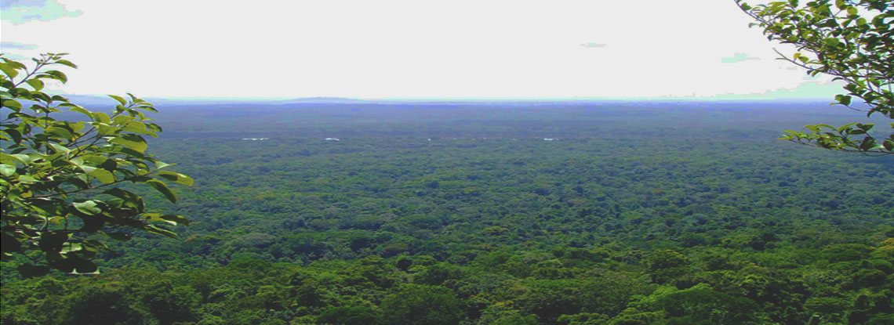

Great Food, Friendly People and a chance to connect with nature.

Discover Guyana
Explore Guyana
Few places on the planet offer raw adventure as authentic as densely forested Guyana.
Although has a troubled history of political instability and interethnic tension underneath
the headlines of corruption and economic mismanagement is a joyful and motivated mix of people
who are slowly turning the country into the continents best-kept eco-tourism secret..
Georgetown, the country's crumbling colonial capital, is distinctly Caribbean , with an alluring vibe, happening nightlife and some great places to eat. The interior of the country is more amazonian, with its amerindian communities and
unparalleled wildlife-viewing opportunities tucked quietly away from the capital's noise and bustle. From sea turtle-nesting grounds along the country's north coast to monkeys and jaguars in the rain forest and giant ant eaters down in the
southern savannas, Guyana's natural wonders are well worth the mud, bumpy roads and sweat.
Online Newspapers
Kaieteur News
For news and updates from Kaieteur News
Click here!
Stabroek News
For news and updates from Stabroek News
Click here!
Guyana Chronicle For news and updates from The Guyana Chronicle
Click here!
Kaieteur News
For news and updates from Guyana Times
Click here!